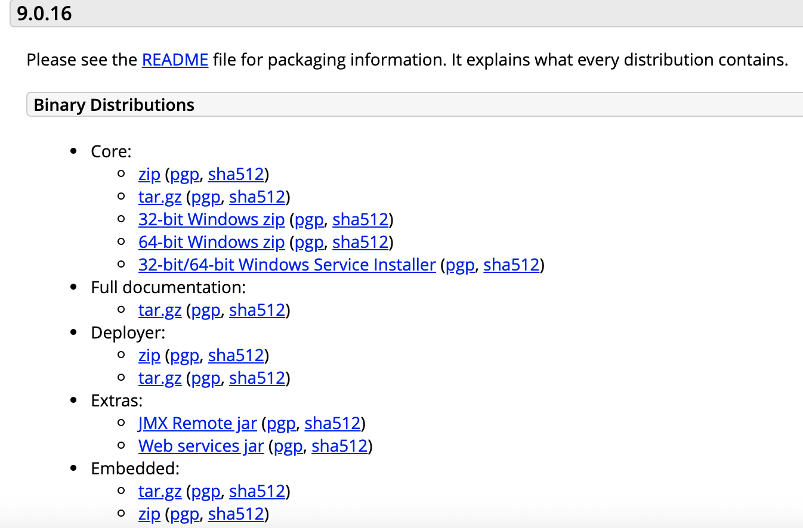
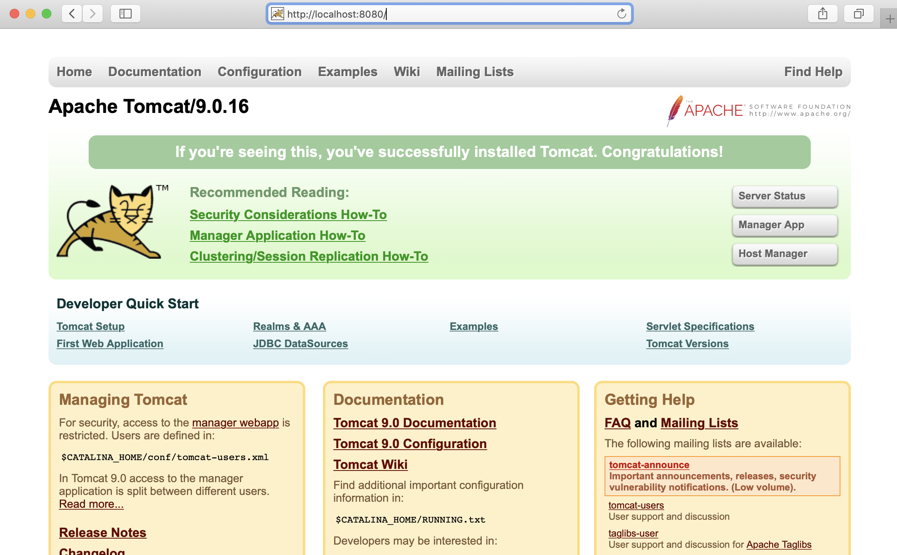

Tomcat
发音说明
Apache Tomcat
服务器介绍
Tomcat是Apache 软件基金会（Apache Software Foundation）的Jakarta 项目中的一个核心项目，由Apache、Sun 和其他一些公司及个人共同开发而成。因为Tomcat 技术先进、性能稳定，而且免费，因而深受Java 爱好者的喜爱并得到了部分软件开发商的认可，成为目前比较流行的Web 应用服务器。 目前tomcat最新版本是9.0.16 (2019-02-20)
Tomcat 9.0.16 安装
官方网址：https://tomcat.apache.org/

说明：
- Binary Distributions和Source Code Distributions: 分别是二进制版本和源代码包。
- Core: 是Tomcat正式的二进制发布版本，一般做开发或学习的时应该下载Core下的对应安装包。
- Deployer: 是基于Tomcat的web应用的发布器，就是在把写好的JavaEE应用发布到Tomcat的时候可以使用Deployer来动态的发布。所以它不是真正的Tomcat二进制版本，它只是一个用以发布基于Tomcat的Web应用的发布工具而已
Step 1
- 我们此处下载core下面的zip或tar.gz压缩包即可。
- 将下载好的tomcat安装包，防止到指定的路径，此处笔者放置在新建目录tomcat下。
/Users/用户名/apache/tomcat/9.x/
Step 2
解压缩 apache-tomcat-9.0.16.zip , 此时tomcat9解压目录为:
/Users/用户名/apache/tomcat/9.x/apache-tomcat-9.0.16/
Step 3
打开terminal终端，进入tomcat9解压缩目录
> cd /Users/用户名/apache/tomcat/9.x/apache-tomcat-9.0.16/
进入bin目录：
> cd /Users/用户名/apache/tomcat/9.x/apache-tomcat-9.0.16/bin/
执行 startup.sh 尝试启动tomcat。
> ./startup.sh
如果出现以下提示：Permission denied, 说明权限异常。
-bash: ./startup.sh: Permission denied
解决方案：给Tomcat启动命令校本赋予权限
> sudo chmod 755 /Users/用户名/apache/tomcat/9.x/apache-tomcat-9.0.16/bin/*.sh
然后，再次执行启动脚本。
> ./startup.sh
打开浏览器，访问 http://localhost:8080/, 如果出现如下页面即表示Tomcat成功启动。
